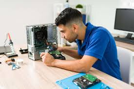
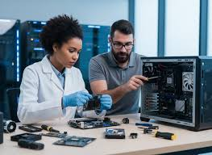

¿Quiénes Somos?
Somos una empresa especializada en soporte técnico profesional a domicilio en Lima Metropolitana, enfocada en brindar soluciones tecnológicas eficientes, seguras y confiables.
Nuestro compromiso es ofrecer atención personalizada, diagnósticos claros y garantía en cada servicio realizado.
- ✔ Atención personalizada
- ✔ Diagnóstico transparente
- ✔ Garantía en cada servicio
Nuestra Historia
TecHogar Support Perú nace como una iniciativa orientada a resolver los problemas tecnológicos cotidianos de hogares y pequeñas empresas. Con el tiempo, hemos consolidado nuestra experiencia en mantenimiento, optimización de equipos, configuración de redes y seguridad informática.
Nuestro crecimiento se basa en la confianza del cliente, la responsabilidad profesional y la mejora continua.
Misión
Brindar soluciones tecnológicas eficientes y accesibles, mejorando la productividad y seguridad digital.
Visión
Ser una empresa referente en soporte técnico en Lima Metropolitana, reconocida por su calidad y profesionalismo.
Objetivos
Expandir nuestra cobertura, fortalecer la atención remota y mantener altos estándares de calidad.
Nuestros Valores
Responsabilidad
Cumplimos nuestros compromisos con ética y puntualidad.
Transparencia
Diagnósticos claros y precios justos.
Compromiso
Atención enfocada en resultados reales.
Indicadores de Servicio
+150
Equipos optimizados
98%
Clientes satisfechos
24h
Tiempo promedio de atención
Nuestro Equipo

Técnicos Certificados
Personal capacitado en mantenimiento, redes y seguridad informática.

Soporte Remoto
Atención rápida mediante asistencia virtual segura.

Diagnóstico y Asesoría
Evaluamos el estado de tus equipos y brindamos recomendaciones estratégicas para mejorar rendimiento y seguridad.
Testimonio
“Excelente servicio, solucionaron el problema de mi laptop el mismo día. Muy profesionales y claros en la explicación.”
— Cliente satisfecho¿Necesitas soporte técnico confiable?
Estamos listos para ayudarte.
Solicitar Servicio